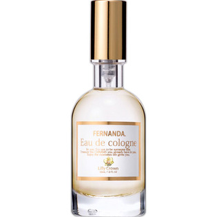

返回列表
产品名称：フェルナンダ オーデコロン リリークラウン

ＦＥＲＮＡＮＤＡ ＪＡＰＡＮ フェルナンダ オーデコロン リリークラウン ３０ＭＬ
メーカー ＦＥＲＮＡＮＤＡ ＪＡＰＡＮ
JANコード 4571395828068
商品の特徴
FERNANDAから待望の香水が登場
- 成分・分量
- エタノール、香料、水、ポリソルベート80、メトキシケイヒ酸エチルヘキシル、t-ブチルメトキシジベンゾイルメタン、黄4、赤227
- 用法及び用量
- 首や手首、耳の後ろ等、直射日光のあたらない場所に適量塗布してください。